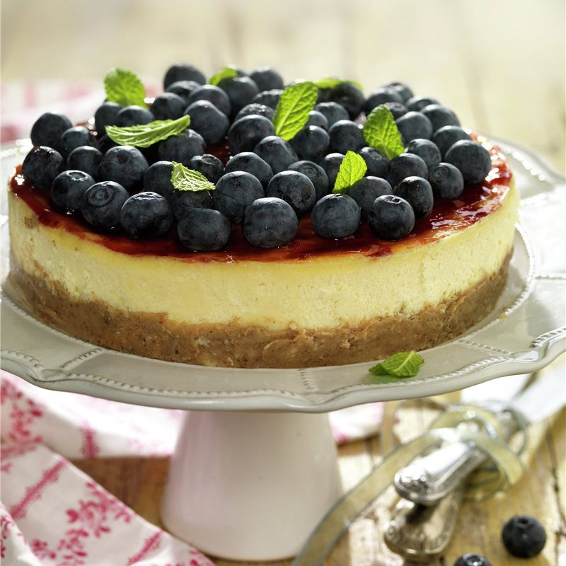

Receta: Tarta de queso

Ingredientes
| Ingredientes | Cantidad |
|---|---|
| Galletas Digestive | 30 |
| Mantequilla | 100g |
| Mermelada De Arándanos | 150g |
| Arándanos | 200g |
| Azúcar | 40g |
| Queso Blanco Para Untar | 250g |
| Huevos | 3 unidades |
| Queso Mascarpone | 150g |
| sencia De Vainilla o extracto | ½ cucharadas |
| Harina | 40g |
| hojas de menta fresca | Al gusto |
Preparación
- Precalienta el horno a 180 grados.
Tritura las galletas y mézclalas con la mantequilla fundida.
Dispón la preparación en el fondo de un molde circular, presionándola. - Bate el azúcar con los quesos y los huevos, mejor con varillas eléctricas.
Incorpora la harina tamizada y la vainilla, y mezcla hasta que se integren. - Vierte esta preparación en el molde y cuece al baño María durante 40 o 45 minutos a 180º.
Para ello, llena con dos dedos de agua caliente una placa honda de horno y pon el molde dentro.
En ningún momento debe entrar agua en el interior del molde.
Apaga el horno y reserva la tarta dentro, con la puerta abierta, 1 hora hasta que se enfríe. - Desmolda la tarta en una fuente, cubre la superficie con la mermelada
y dispón encima los arándanos lavados y secos.
Añade unas hojitas de menta fresca lavada y seca.
Resérvala en la nevera hasta el momento de servirla.